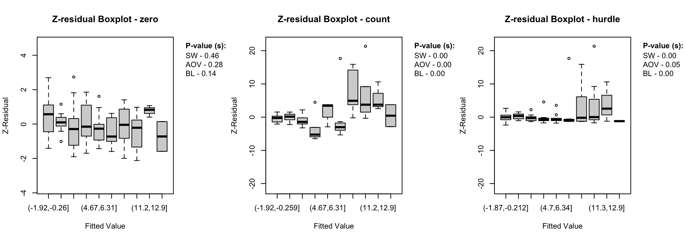

This vignette demonstrates how to use the Zresidual package to compute component-wise Z-residuals for diagnosing Bayesian hurdle models (Mullahy 1986), based on the output from the brms package in R (Bürkner 2017) can be calculated separately for the zero, count and hurdle components to reveal potential model misspecifications. The examples illustrate the practical use of these residuals for RPP (Feng, Li, and Sadeghpour 2020) diagnostics.
3 Definitions of Component-wise Z-residuals for Bayesian Hurdle Models
This section demonstrates the definiotns of component-wise posterior predictive quantities including the posterior predictive PMF, survival function, and RPP for Bayesian hurdle models. Hurdle models consist of two parts:
A logistic component modeling the probability of structural zeros.
A count component modeling positive counts using a zero-truncated distribution.
Let \(C_i \in \{0, 1\}\), where \(C_i = 1\) indicates a non-zero value, and \(C_i = 0\) indicates a zero value for the \(i^\th\) observations. If \(C_i=1\), the corresponding count model then operates on \(y_i^+ \in \{1, 2, \dots\}\), i.e., the positive counts only.
Using Bayesian estimation (e.g., via the brms package), we draw \(T\) samples from the posterior distribution. Let \(\theta^{(t)}\) denote the \(t^\th\) posterior draw, including component-specific parameters like:
\(\pi^o_i\) : the zero porbability,
\(\mu_i^{(t)}, \phi^{(t)}\) : parameters for the count component.
For a given observation \(y_i^\text{obs}\), the component-wise posterior predictive PMF and survival functions are defined below.
where \(p_i^\text{UT}(. \mid \theta^{(t)})\) and \(S_i^\text{UT}(. \mid \theta^{(t)})\) denote the PMF and survival function of the untruncated count distribution, given the component-specific posterior parameters \(\theta^{(t)}\).
For any observed value \(y_i^\text{obs}\), we define: \[\begin{equation}
\label{eq:post_rpp}\text{rpp}_i(y_i^\text{obs} | \theta^{(t)}) = S_i(y_i^\text{obs} | \theta^{(t)}) + U_i \times p_i(y_i^\text{obs} | \theta^{(t)})
\end{equation}\] where \(U_i \sim \text{Uniform}(0,1)\). Here, \(y_i^\text{obs}\) is the observed value, which can refer to either the binary response \(C_i\) or the positive count \({y_i^+}^\text{obs}\), depending on the component being evaluated. Then, the Z-residual of a discrete response variable is, \[\begin{equation}
\label{eq:z_residual}
z_i = -\Phi^{-1}(\text{rpp}_i(y_i^\text{obs}|\theta)) \sim N(0, 1)
\end{equation}\] where (^{-1}(.)) is the quantile function of standard normal distribution.
4 A Simulation Example
4.1 Model fitting with brms
To demonstrate how Zresidual works with hurdle models, we first simulate data from a HNB model. This simulated dataset allows us to evaluate how well the model and residual diagnostics perform when the true data-generating process is known.
Code
# Simulation parametersn <-100beta0 <--1# Intercept for hurdle (zero) partbeta1 <--1# Coefficient for hurdle partalpha0 <-2# Intercept for count partalpha1 <-6# Coefficient for count partsize <-6# Dispersion parameter for negative binomialx <-rnorm(n) # Predictor# Hurdle (zero) partlogit_p <- beta0 + beta1 * xp_zero <-exp(logit_p) / (1+exp(logit_p))zeros <-rbinom(n, 1, p_zero)# Count (non-zero) partlog_mu <- alpha0 + alpha1 * xmu <-exp(log_mu)# Generate from zero-truncated negative binomialprob <- size / (size + mu)y <- (1-zeros)*distributions3::rztnbinom(n, size, prob)# A random error variablez <-rnorm(n, mean =0, sd =1)# Final datasetsim_data <-data.frame(y = y, x = x, z = z)
This dataset includes a single continuous predictor x, a rando error variable z and the outcome y is generated from a hurdle negative binomial process. Note that the error variable is not included in generating the y outcome variable. The hurdle (zero) part is modeled with a logistic function and the count part uses a zero-truncated negative binomial distribution.
Now, we use the brms package to fit a hurdle negative binomial model to the simulated data.
Code
library(brms)library(distributions3)load(here::here("inst/extdata/fit_hnb.Rdata"))#fit_hnb <- brm(bf(y ~ x + z, hu ~ x + z),# data = sim_data, # family = hurdle_negbinomial())
The hu formula models the hurdle (zero) part, while the main formula models the count component. The family = hurdle_negbinomial() tells brms to use a hurdle model with a negative binomial distribution for the non-zero counts. We use default parameter setting on this example to fit the model.
4.2 Computing Z-residuals
In this example, we compute Z-residuals for the HNB model separately for, logistic component (zero part) and count component using Zresidual(). Apart from component-wise Z-residuals, the Zresidual package support overall model Z-residual calculation. The package take brms fit as an input and the type argument ("zero", "count" or "hurdle") specifies which component to use when calculating the residuals. By default, Z-residuals are computed using the Importance Sampling Cross-Validation (iscv) method based on randomized predictive p-values (RPP). Alternatively, users can choose the standard Posterior RPP method by setting method = "post".
Code
library(matrixStats)library(distributions3)library(Zresidual)zres_hnb_post_zero <-Zresidual(fit_hnb, type ="zero", method ="rpost",nrep=10)zres_hnb_post_count <-Zresidual(fit_hnb, type ="count", method ="rpost",nrep=10)zres_hnb_post_hurdle <-Zresidual(fit_hnb, type ="hurdle", method ="rpost",nrep=10)
4.2.0.1What the function returns
The function Zresidual.hurdle.negbinomial() (and other Z-residual computing functions) returns a matrix of Z-residuals, with additional attributes. The returned object is of class zresid, which includes metadata useful for diagnostic and plotting purposes.
Return Value
A numeric matrix of dimension n × nrep, where n is the number of observations in the data and nrep is the number of randomized replicates of Z-residuals (default is 1). Each column represents a set of Z-residuals computed from a RPP, using either posterior (post) or importance sampling cross-validation (iscv) log predictive distributions.
Matrix Attributes
The returned matrix includes the following attached attributes:
type: The component of the hurdle model the residuals correspond to. One of “zero”, “count”, or “hurdle”.
zero_id: Indices of observations where the response value was 0. Useful for separating diagnostics by zero and non-zero parts.
log_pmf: A matrix of log predictive probabilities (log-PMF) per observation and posterior draw.
log_cdf: A matrix of log predictive CDF values used in computing the RPPs.
covariates: A data frame containing the covariates used in the model (excluding the response variable). This can be used for plotting or conditional diagnostics.
fitted.value: The posterior mean predicted value for each observation depending on the type.
4.3 Diagnostic Tools for Z-Residuals
4.3.0.1 Visualizing Z-residuals
The Zresidual package includes built-in plotting functions (QQ Plot, Scatter Plot, Boxplot) to help diagnose model fit using Z-residuals. These functions are designed to work directly with objects of class zresid returned by functions like Zresidual(). These plots help assess:
Whether residuals are approximately standard normal (via QQ plots),
Whether there are patterns in residuals across fitted values (which may suggest model misspecification),
Whether residuals differ across covariates (optional extensions).
Code
for (i in1:10) {par(mfrow =c(1,3))qqnorm.zresid(zres_hnb_post_zero,irep=i)qqnorm.zresid(zres_hnb_post_count,irep=i)qqnorm.zresid(zres_hnb_post_hurdle,irep=i)}
Figure 1: QQ plots
Code
for (i in1:10) {par(mfrow =c(1,3))plot.zresid(zres_hnb_post_zero, x_axis_var="lp", outlier.return =TRUE,irep=i)plot.zresid(zres_hnb_post_count, x_axis_var="lp", outlier.return =TRUE, log ="x",irep=i)plot.zresid(zres_hnb_post_hurdle, x_axis_var="lp", outlier.return =TRUE, log ="x",irep=i)}
Figure 2: Scatter plots
Code
for (i in1:10) {par(mfrow =c(1,3))boxplot(zres_hnb_post_zero, x_axis_var="lp",irep=i)boxplot(zres_hnb_post_count, x_axis_var="lp",irep=i)boxplot(zres_hnb_post_hurdle, x_axis_var="lp",irep=i)}
Figure 3: boxplots
The diagnostic evaluations for the true model—comprising scatter plots, Q-Q plots, and boxplots of Z-residuals—demonstrate that the model adequately captures the data structure. Across the logistic, count, and hurdle components, Z-residuals are evenly scattered around zero and mostly fall within the range of -3 to 3, indicating no visible model misfit. Complementary statistical tests, including the SW test for normality, ANOVA for mean equality, and BL test for variance homogeneity, all return p-values above the 0.05 threshold. This suggests that the residuals follow a normal distribution and exhibit equal means and variances across fitted value intervals. The Q-Q plots further support normality through close alignment with the 45-degree reference line, while the boxplots confirm consistent residual means across partitions. Collectively, these diagnostics validate that the true model satisfies key distributional assumptions and that the proposed Z-residual methods are effective in detecting model adequacy.
The plotting functions in the Zresidual package are designed to be flexible and lightweight, allowing users to quickly visualize residual patterns across different components of hurdle models. These functions support all customizable arguments in base R functions such as axes, labels etc. by making them adaptable to a wide range of diagnostic workflows. The plot.zresid() function offers flexible diagnostic plotting for Z-residuals, supporting various x-axes such as index, fitted values, and covariates. Both plot.zresid() and qqnorm.zresid() automatically highlights outlier residuals that fall outside the typical (or user specified)range making it easier to identify problematic observations.
4.3.0.2 Statistical Tests
In addition to visual diagnostics, the package offers formal statistical tests to quantify deviations from normality or homogeneity of variance in Z-residuals by taking an zresid class object as an input.
These tests return standard htest or aov objects, making them easy to report, summarize, or integrate into automated workflows. One advantage of the visualization functions provided by the Zresidual package is that they allow users to diagnose the model both visually and using statistical tests simultaneously.
We might be also interested in comparing our HNB model to HP model taking the HP model as misspecified model .
Code
load(here::here("inst/extdata/fit_hp.Rdata"))#fit_hp <- brm(bf(y ~ x + z, hu ~ x + z),# data = sim_data, # family = hurdle_negbinomial(),# prior = prior("normal(1000, 1)", class = "shape"))
This prior("normal(1000, 1)", class = "shape") is a very strong prior, tightly centered around 1000. Its practical effect is to force the shape parameter to be very large, which in turn makes the model behave almost like a Poisson distribution for the positive counts (truncated part of the hurdle model).
Code
zres_hp_post_zero <-Zresidual(fit_hp, type ="zero", method ="rpost",nrep=10)zres_hp_post_count <-Zresidual(fit_hp, type ="count", method ="rpost",nrep=10)zres_hp_post_hurdle <-Zresidual(fit_hp, type ="hurdle", method ="rpost",nrep=10)
Code
for (i in1:10) {par(mfrow =c(1,3))qqnorm.zresid(zres_hp_post_zero,irep=i)qqnorm.zresid(zres_hp_post_count,irep=i)qqnorm.zresid(zres_hp_post_hurdle,irep=i)}
Figure 4: qqplots
Code
for (i in1:10) {par(mfrow =c(1,3))plot.zresid(zres_hp_post_zero, x_axis_var="lp", outlier.return =TRUE,irep=i)plot.zresid(zres_hp_post_count, x_axis_var="lp", outlier.return =TRUE, log ="x",irep=i)plot.zresid(zres_hp_post_hurdle, x_axis_var="lp", outlier.return =TRUE, log ="x",irep=i)}
Figure 5: plots
Code
for (i in1:10) {par(mfrow =c(1,3))boxplot(zres_hp_post_zero, x_axis_var="lp",irep=i)boxplot(zres_hp_post_count, x_axis_var="lp",irep=i)boxplot(zres_hp_post_hurdle, x_axis_var="lp",irep=i)}

Figure 6: qqplots
While the logistic component shows randomly scattered residuals and normal Q-Q alignment, supported by non-significant p-values, the count and hurdle components display clear signs of misspecification. These include banded residual patterns, heavy tails, Q-Q deviations, and significant p-values from the SW, ANOVA, and BL tests. The overall hurdle model diagnostics reflect similar issues but cannot isolate the source of misfit. This highlights a key advantage of component-wise residual analysis: it reveals that the logistic sub-model is correctly specified, while the count component is not. Such separation enables more precise identification and correction of modeling issues.
##Real Data Example for Illustration and Demonstration
5 Other Functions
In addition to Z-residual computation and visualization, the Zresidual package provides several utility functions to support deeper model diagnostics and probabilistic analysis including functions for calculating the logarithmic predictive p-values (post_logrpp(), iscv_logrpp()). The package also includes dedicated functions to compute the logarithmic PDFs and CDFs for supported distributions. These can be used to manually inspect likelihood components or to derive custom model evaluation metrics. The log-scale calculations offer improved numerical stability, especially when dealing with small probabilities. These tools integrate seamlessly with outputs from Bayesian models fitted using brms, maintaining compatibility and flexibility. Together, they extend the package’s functionality beyond residual analysis, supporting a comprehensive and rigorous approach to Bayesian model checking.
6 References
Bürkner, Paul-Christian. 2017. “brms: An R Package for Bayesian Multilevel Models Using Stan.”Journal of Statistical Software 80 (1): 1–28. https://doi.org/10.18637/jss.v080.i01.
Feng, Cindy, Longhai Li, and Alireza Sadeghpour. 2020. “A Comparison of Residual Diagnosis Tools for Diagnosing Regression Models for Count Data.”BMC Medical Research Methodology 20 (1): 175. https://doi.org/10.1186/s12874-020-01055-2.
Mullahy, John. 1986. “Specification and Testing of Some Modified Count Data Models.”J. Econom. 33 (3): 341–65.